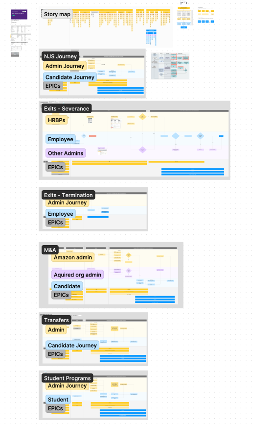
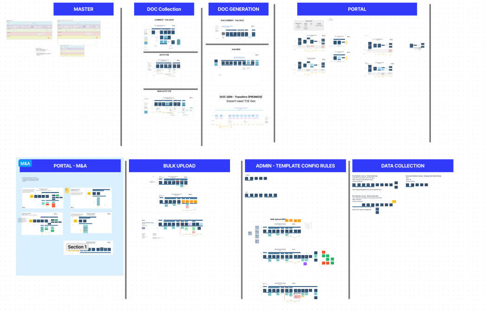
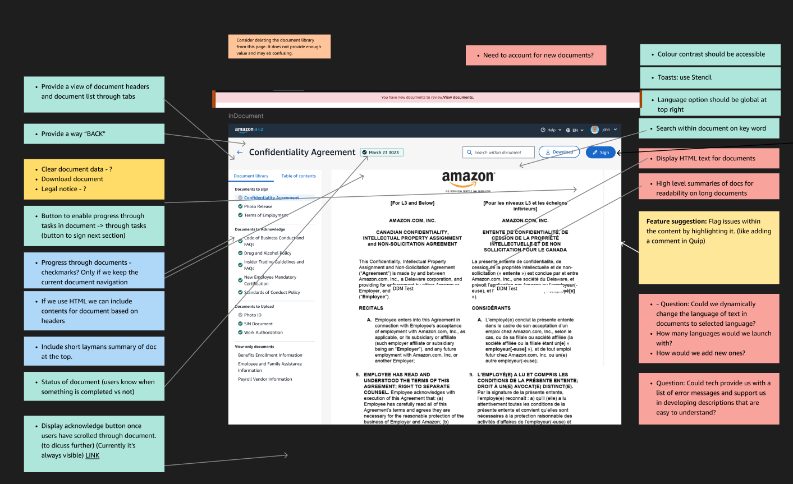
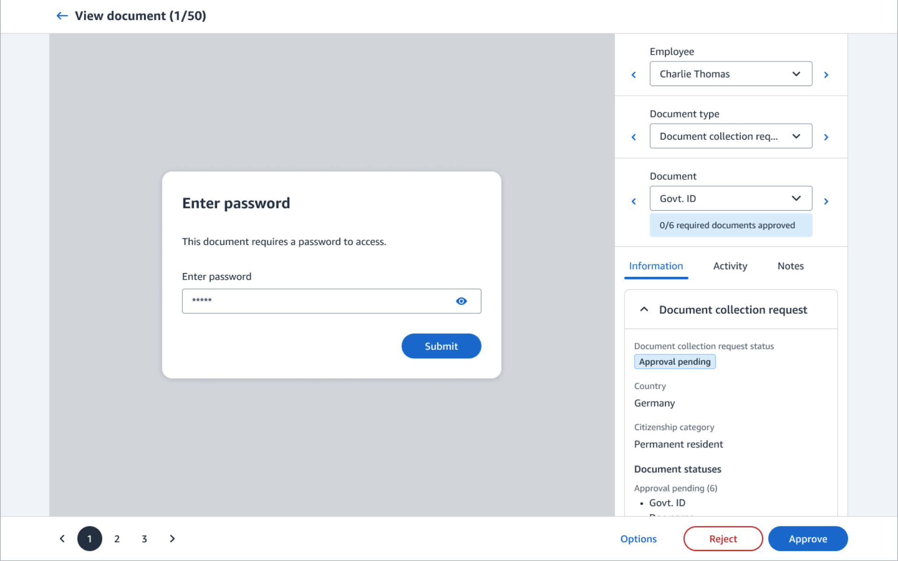
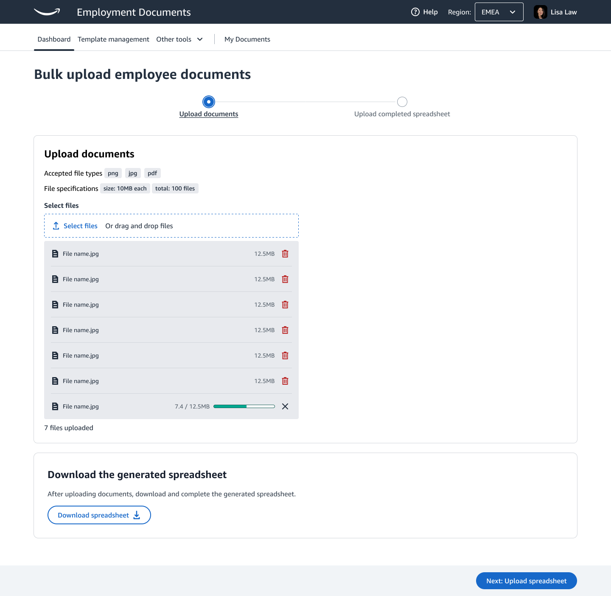
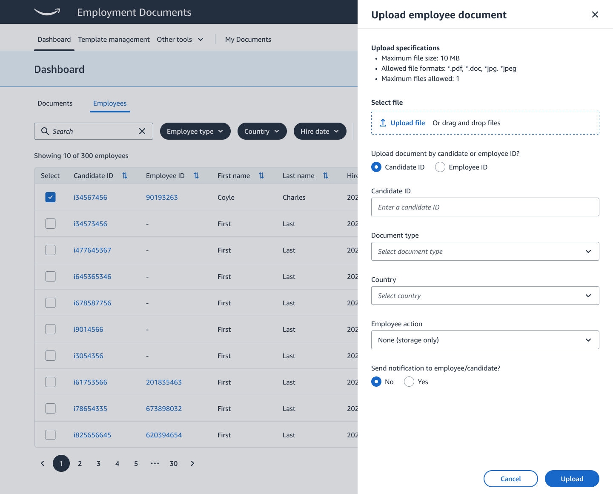

The challenge
Amazon managed employee documents through a patchwork of third-party contractors spread across 67 countries. The result was a fragmented, error-prone system that failed employees and administrators at nearly every stage of the employment lifecycle, from candidates signing offer letters to alumni accessing records.
The system couldn't scale. It created poor candidate experiences, lacked accessibility compliance, and produced recurring errors across hiring, onboarding, and HR workflows. For a company operating at Amazon's scale, this wasn't just a UX problem. It was a legal, operational, and reputational one.
"It always comes down to a person." — HR Administrator, during a research interview
My role
I was the lead product designer for EDM for over two years, owning end-to-end UX strategy and execution across nine distinct product experiences within the ecosystem. This wasn't an embedded designer role. I drove the design direction, facilitated workshops with global stakeholders, advocated for user-centered decisions with leadership, and supervised all UX deliverables for quality and deadline alignment.
I acted as the primary liaison between UX, engineering, product management, legal, HR compliance, and vendor teams across multiple countries. I collaborated with researchers to define study strategies and ensured UX work stayed ahead of development to accommodate inevitable pivots, especially in a product where country-specific legal requirements could change the entire scope of a feature.
My direct scope covered:
- Employee document portal (user-facing)
- Administrative portal
- Bulk document generation
- Document Collection Requests (DCRs)
- Mergers & Acquisitions document tooling
- Bulk employee data changes
- Contextual document uploads
- Document collection (country-specific compliance)
- Document viewing and accessibility
Getting oriented
When I joined, the team had existing research: heuristic evaluations, usability tests, SUS scores, and journey maps from pre-hire through alumni. But it hadn't been socialized across the full team. A significant amount of institutional knowledge existed in silos.
I spent the first few months conducting intensive interviews with the prior design team, reviewing all existing documentation, and holding frequent syncs with product managers to develop a clearer picture than anyone on the team currently had. This wasn't just onboarding. It was creating a shared foundation from which the entire team could move faster.

By surfacing and synthesizing what already existed, we bypassed months of redundant foundational research and focused immediately on evaluating the performance of changes. We expedited a three-year plan by delivering UX work ahead of development, which gave every team (engineering, product, legal) a common place to align, debate, and move forward from.

Key design decisions
Shifting from document-centric to people-centric search
The entire paradigm of document management had always centered on the document itself: find it, edit it, store it. The existing software reflected this. Admins could only search by exact document IDs or person IDs, which wasn't practical at Amazon's scale.
What I kept noticing in research and hearing in conversations was that every document task ultimately existed because of a person. The "why" behind document management was people, not paper. I advocated internally for flipping the default search paradigm to employee-based, while preserving document search as a secondary mode for complex bulk tasks.

The shift resulted in dramatically faster admin workflows and a significant increase in automation, reducing the time spent per document task and enabling admins to handle larger volumes without proportional increases in effort.
Making document completion feel urgent without punishing users
Incomplete documents were a persistent legal risk. But document management systems had a well-known engagement problem: people only accessed them when they needed something they'd already completed. There was no inherent urgency to proactively submit.
During interviews, one user crystallized the problem: "Can you remove the overdue documents? They're distracting." Rather than treating this as an edge case, I recognized it as a signal about how people perceived completion. The further they were from a required date, the less the document registered as important.
We removed the literal overdue date and replaced it with a contextual "overdue" label, preserving urgency without anchoring to a specific date that became noise over time. Completion rates improved and admin follow-up volume decreased.
Accessible document viewing
During user interviews, I discovered something unexpected: most employees with disabilities were bypassing the document portal entirely, downloading PDFs directly to their computers so they could use their own assistive tools. The default document viewer wasn't screen-readable, and these users had adapted by memorizing menu positions and workflows just to get basic tasks done.
This wasn't a minor inconvenience. It was a complete breakdown of the intended experience for a significant portion of the workforce, and it had gone undetected because standard testing doesn't catch people who abandon the product entirely.

I worked with engineering to evaluate and implement the Mozilla PDF reader, which provided full screen-reader compatibility with minimal operational impact. Documents requiring signatures needed a separate solution, involving legal and financial teams to align on an approach. After launching the new viewer, I revisited the same participants. The response was immediate and meaningful. People were visibly moved that they'd been considered.
"I appreciate the effort you put into something that is often taken for granted, especially for employees who need accessible administrative and internal tools." — Stakeholder
Bulk document generation at global scale
Amazon's hiring volume is among the largest in the world, spanning facilities, corporate, services, student programs, and acquisitions. Bulk document generation had to work across 67 countries, each with its own legal requirements, governing bodies, and file storage rules. Some required locally hosted servers or country-specific trusted proxies.
To handle this complexity without creating an administrative burden, I designed a logic gating system: a rules-based framework that automated document routing and generation based on the employee's context. Once configured, the system ran autonomously and only required human intervention for adjustments or additions.

Contextual document uploads
Previously, uploading a document required leaving the current context, initiating a new search, locating the individual, and then selecting the relevant document. We redesigned uploads to happen contextually, directly within the page the admin was already on, with the system inferring the relevant individual and document type automatically.

More tasks were being completed per shift as a result, not because of speed improvements but because reducing cognitive load per task created headroom for additional work within the same session.
Phase 2: Adding an intelligence layer
After shipping the platform, the system was still largely reactive. It showed you what had happened. It didn't tell you what to do about it. I led a second phase of work focused on AI integration: running cross-functional workshops, identifying where intelligence could close the gap for each user type, and designing enhancements grounded in the same research we'd already done.
Every concept came from a validated research finding or an existing backlog item. The framing I used across all of it: what does this person actually need right now that the system isn't surfacing for them?
AI Integration Layer
Four surfaces, each made actively intelligent
01
M&A Dashboard
Risk scoring, velocity forecasting, and anomaly detection replace a plain completion percentage — so managers know what to act on, not just what happened.
02
Bulk Document Generation
Inline error detection with proposed corrections and confidence levels eliminates the upload–fix–re-upload loop. ~75% of common errors resolved without leaving the page.
03
HR Admin Portal
A pre-review panel cross-references Workday before the approver opens a document — surfacing pay band violations, legal entity mismatches, and expired IDs automatically.
04
Employee Portal
Plain-language summaries, a mobile briefing card, and section-level tracking help new hires and non-native speakers understand what they're signing — before they sign it.
M&A dashboard: from status to decision support
Managers tracking acquisition document completion had one signal: a percentage. 57% complete. They had to do all the interpretation themselves. Is that on track? What's the blocker? What do I do next?
The AI layer I designed changes that question entirely. Risk scoring on each project card with a plain-language explanation of why. Velocity-based close date forecasting. Anomaly detection that surfaces the actual blocker — three unreleased Critical employees — instead of leaving it buried in a table. And a conversational assistant that lets managers ask the system direct questions about any employee's status and get a synthesized answer, not a raw data dump.

Bulk generation: breaking the error round trip
The existing error handling for bulk document generation was a full round trip. HR uploaded a spreadsheet, the system found errors, they downloaded a new file, fixed it offline, and re-uploaded. For 72 employees with 8 errors, that meant repeating the entire process for 8 rows.
The self-fix feature I designed eliminates that loop. The system detects each error, proposes the most likely correction with its reasoning, assigns a confidence level, and lets HR accept or reject inline. Rows that genuinely can't be auto-resolved are flagged explicitly with a clear explanation. They don't block the other 64 employees from generating. About 75% of common errors became fixable without leaving the page.
A principle I held throughout: the "can't auto-fix" state had to be honest, not papered over. In a compliance context, an AI that guesses and gets it wrong isn't just a UX problem. It's a liability.
HR admin portal: reviewing with context instead of cold
Document approvers were opening 14-page agreements with no context and reading the entire thing to find out if anything was wrong. For passport and ID collection, they were manually reading scanned documents and mentally cross-checking fields against the employee record.
The AI pre-review panel I designed does the reading before the approver opens the document. It cross-references against Workday, surfaces pay band violations, legal entity mismatches, and expired documents before a single line is read. For ID documents, it extracts key fields automatically and flags expiry issues immediately. The approver still makes the call. What AI removes is the archaeology.
Employee portal: comprehension, not just completion
The employee side had the most vulnerable users in the system: new hires on their first day, warehouse workers on phones, non-native speakers reading bilingual legal agreements. The accessibility work I'd already done gave us the foundation. The AI layer builds directly on it.
A plain language panel runs alongside the document and explains each section in real terms, flagging clauses with real consequences that employees consistently miss (non-solicitation terms buried on page 8 are the thing people get surprised by months later). On mobile, a briefing card surfaces three things to know before the user starts scrolling. A section tracker flags when someone has moved quickly past a high-stakes clause, giving the experience a chance to intervene before the signature rather than after.
AI should surface, not decide. Every enhancement in this phase kept the human in the loop. The approver still approves. The HR admin still releases. What changed is how much work they have to do to understand what matters before they act.
Progressive global launch
Every launch was phased by country group, and each phase was treated as a live User Acceptance Test. Small, real-world groups gave us feedback before each broader rollout, ensuring the primary user populations received a thoroughly vetted experience.
Country-specific legal requirements (Germany's Work Councils requiring physical wet signatures, region-specific file hosting rules, language and vocabulary differences) meant that what worked in one market sometimes required significant rethinking for another. Phased launching let us respond in real time rather than discovering issues after a global rollout.
Outcomes
4.8B
Documents managed annually
$10M+
Annual savings vs. third-party contracts
67
Countries on the platform
9
Product experiences delivered
Beyond the headline numbers, the most meaningful outcomes were harder to quantify. Application abandonment dropped after the document viewing redesign, a result we hadn't anticipated. Accessibility compliance was achieved for the first time. Admin workflows that previously spanned seven steps and five tools were reduced to three steps and two tools for bulk employee data changes.
What I'd do differently
The accessibility discovery came too late. Users with disabilities had been adapting around a broken experience for a long time before we surfaced it, because standard usability testing doesn't catch people who abandon the product entirely. I'd build inclusive participant recruitment into the research plan from day one, not as a secondary study.
I'd also invest earlier in vocabulary alignment. The language challenges around "documents vs. files," Document Collection Requests, and country-specific terminology created friction that cascaded into design decisions, engineering estimates, and user confusion. Establishing a shared taxonomy before defining features would have saved significant rework across multiple workstreams.
On the AI work specifically: I'd establish the measurement infrastructure earlier. We built it, but later than I'd have liked. Having server-side task timing and a continuous feedback loop from day one would have given us better signal during the design phase, not just after launch. I'd also push to involve legal and compliance teams in the AI design process from the start. Many of the constraints we designed around were things I already knew from the platform work. Getting those stakeholders into the AI workshops earlier would have accelerated the work and likely surfaced edge cases we hadn't anticipated.